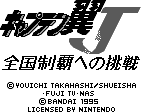
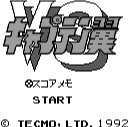

Captain Tsubasa - Gameboy Games

- Company: Bandai
- Date Released: 1995
- Genre: Soccer simulation
Cross between cinematic simulation and actual real-time action.

- Company: Tecmo
- Date Released: 1992
- Price (in yen): 4200
- Genre: Soccer simulation
Anime Video Game Resource Center © 1998 by Luis A. Cruz